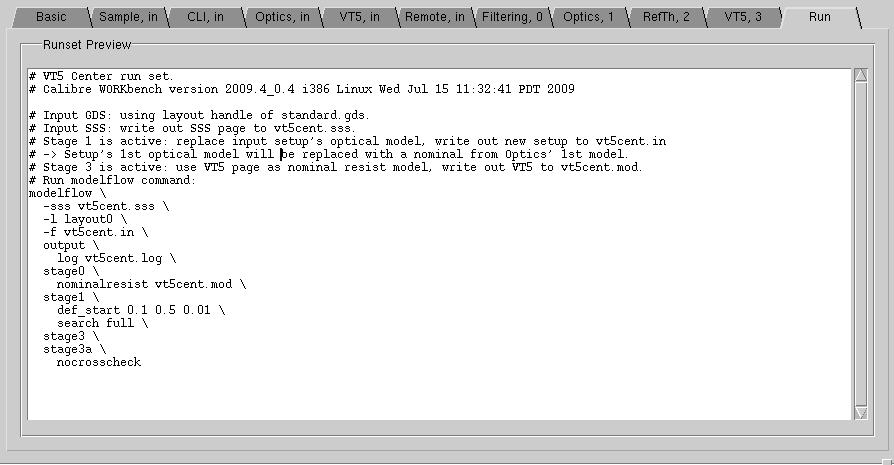
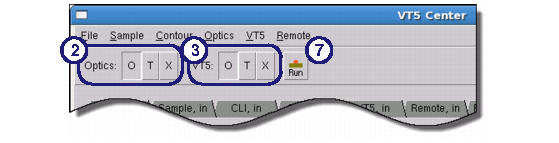

This procedure
describes how to perform optimization. You may have to run optimization
multiple times to find the best fit.
Procedure
- In VT5 Center, click the Run tab
and inspect the contents for accuracy. Note that this tab cannot
be edited.
Figure 1. VT5 Center GUI (Run Tab)
- Select how to handle the optical
model for this run:
To optimize the optical
model, switch the Optics selector to (O)ptimize mode as shown in Figure 2.
To use the model presently
showing in the Optics, in tab, switch the
selector to (T)ry mode.
To use the optical model
defined in the setup file, switch the selector to (X) mode.
Figure 2. Where to Set Optimization Selectors
- Select how to handle resist
model for this run:
To optimize the resist
model, switch the VT5 selector to (O)ptimize mode as shown in Figure 2.
To use the model presently
showing in the VT5, in tab, switch the selector
to (T)ry mode.
To use the resist model
defined in the setup file, switch the selector to (X) mode.
- Save the
session file by selecting or .
This is useful in case the simulation crashes for any reason; you
can restore the settings you made by using the option.
- Optionally,
load a remote machine configuration file into the Remote,
in tab by using the menu
item. For information on remote files, see the section “Distributed Processing in Calibre WORKbench”.
- Optionally,
export the session as a runset file with . This creates a script file
that can be used as input to the modelflow (Version 1) batch command.
- Click the Run button.
Results
Assuming that you do not get any run-time
errors, VT5 Center adds a new line to the Model Flow log section
at the bottom of the window. These log files are used in the next
task, “Analyzing the Results of a VT5 Center Run”.